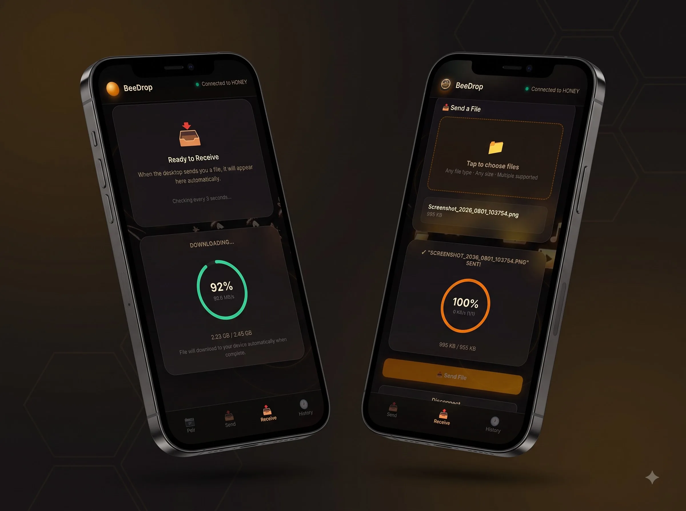

Fast. Secure.
Cross-Platform
Local File Sharing.
Share files instantly between Windows, macOS, and Android over the same Wi-Fi network or mobile hotspot. No internet. No cables. No cloud uploads.
Designed for Seamless Experience
Click on any preview card to inspect the sleek dark glassmorphism interface across desktop and mobile.
Live File Transfer Ring
Track real-time transfer speeds, remaining time, and nearby discovered devices on macOS.
Radar Discovery & Drag-Drop
Scan your local network in real-time with visual radar and drop folders directly to send.

Instant QR Code Pairing
Point your phone's camera at the computer screen to establish an encrypted local link instantly.
Why Choose BeeDrop?
Built for maximum performance, ultimate privacy, and seamless cross-platform local file transfers.
Ultra-Fast & Offline
High-speed local file transfers over Wi-Fi, LAN, or mobile hotspot without internet data or bandwidth caps.
100% Private & Secure
Direct peer-to-peer sharing. Your files stay strictly on your local network without any cloud server uploads.
Cross-Platform & Trusted
Works seamlessly between Windows, macOS, and Android. Save trusted devices for instant auto-discovery.
Folders & Batch Sharing
Transfer complete directory trees and hundreds of 4K videos or documents in one click without losing structure.
Instant QR Pairing
Point your mobile camera at your computer screen to scan an encrypted QR code and pair instantly.
Smart Auto-Resume
Intelligent connection recovery automatically resumes interrupted file transfers right where they left off.
Transfer Speed Performance Guide
Benchmark speeds achieved directly across different local connection hardware.
| Connection | Typical Speed | Maximum Speed |
|---|---|---|
| 80–100 MB/s | 120+ MB/s | |
| 50–90 MB/s | 120 MB/s | |
| 25–60 MB/s | 80–90 MB/s | |
| 5–20 MB/s | 30 MB/s | |
| 20–50 MB/s | 70 MB/s | |
| 5–15 MB/s | 25 MB/s |
* Actual speeds depend on your router, signal quality, storage speed, and hardware.
Requirements & Installation
Everything you need to know about system compatibility, launch behavior, and installation.
Platform Launch & Network Matrix
| Parameter | Windows | macOS (Intel) | macOS (Apple Silicon M1–M5) |
|---|---|---|---|
| Internet Required | Only for download | Only for download | Only for download & Rosetta (1st launch) |
| Firewall Permission | Allow Firewall when prompted | Not Required | Not Required |
| Runs Natively | Yes | Yes | Apple Rosetta 2 |
| First Launch | Starts normally | Starts normally | Installs Rosetta 2 (~1 min), then starts |
| Future Launches | Normal | Normal | Normal (Rosetta cached) |
macOS (Intel) Installation Guide
-
1
Download: Get
BeeDrop-macOS.dmg. -
2
Mount DMG: Double-click the DMG file to open the installer window.
-
3
Install: Drag
BeeDrop.appinto the Applications folder. -
4
Launch & Approve: Open from Applications. If security prompt appears, approve via System Settings → Privacy & Security.
-
5
Start Sharing: BeeDrop is ready to discover nearby devices and transfer files!
Windows Installation Guide
-
1
Download Installer: Get
BeeDrop-Setup.exefor Windows (10 / 11). -
2
Run Setup: Double-click
BeeDrop-Setup.exeto launch the installer wizard. -
3
SmartScreen Approval: If Windows Defender SmartScreen appears, click More info → Run anyway.
-
4
Complete Setup: Follow the setup wizard prompts and launch BeeDrop from Start Menu.
-
5
Start Sharing: Allow Firewall access when prompted. BeeDrop is ready to discover nearby devices!
macOS (Apple Silicon M1–M5) Guide & Rosetta 2 Quick FAQ
Installation Guide (M1–M5 Macs)
-
1
Download & Install: Download
BeeDrop-macOS.dmg, open it, and dragBeeDrop.appto Applications. -
2
First Launch Prompt: Open BeeDrop. When prompted "To open BeeDrop, you need to install Rosetta.", click Install.
-
3
Rosetta 2 Setup: Wait ~1 minute while official Apple Rosetta 2 completes installation automatically (1-time only).
-
4
Launch & Share: Open BeeDrop again from Applications. It starts normally and is ready for offline transfers.
Rosetta 2 Quick FAQ
Apple's translation layer enabling high performance execution on Apple Silicon Macs.
Yes Apple signed & verified.
Apple Silicon Macs (M1–M5). Intel Macs do not require it.
Takes < 1 min only once. Subsequent launches run instantly.
How It Works
Simple 6-step local file sharing process with zero configuration.
Get BeeDrop App
Download the official installer for Windows, macOS, or launch the instant Android PWA.
Connect Local Network
Join all target devices to the same home Wi-Fi network or active mobile hotspot.
Radar Auto Discovery
Launch BeeDrop to automatically discover nearby active nodes on your live radar screen.
Select Content & Folders
Drag and drop individual files, high-res photos, 4K videos, or complete directory trees in one batch.
Authorize & Transfer
Accept the incoming prompt on the receiving device to initiate instant encrypted P2P sharing.
Auto-Save & Resume
Files are safely saved directly to downloads with integrity checks and session auto-resume.
Download BeeDrop
Get the official installers for your platform. Free and direct local file transfer.
macOS
Universal Installer (.dmg)
Choose your Mac architecture:
Madhusudan Sarkar
"I built BeeDrop to make local file sharing between Windows, macOS, and Android simple, fast, and secure—without relying on cloud services, data caps, or internet connectivity."